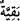
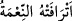
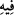

yaşa.)”[191] buyurmuş ve çocuk yüz sene yaşamıştır. Ayrıca hiçbir ferdi kalmamış, helak
olmuş her ümmet için de kullanılır.
Âyette hayırlı ve faziletli kimseler “__WORD__” lâfzı ile ifade ediliyor. Çünkü normal olarak
insanoğlu kazandığı şeylerin en güzelini, en üstününü geriye bırakmak ister. İşte
“bakıyye” kelimesi, böylece cömertlik ve fazilet mânâsında darb-ı mesel olmuştur.
“Falanca kavmin bakıyyesindendir” demek, hayırlılarındandır, demektir. Şu söz de bu
mânâda söylenmiştir: “Köşelerde kalmış nice güzellikler, insanlar arasında ne üstün
kimseler vardır.”
“Fakat onlardan, kurtuluşa erdirdiğimiz az bir kısmı müstesnadır.” Fakat bu
nesiller arasından kendilerini kurtardığımız pek az kişi bozgunculuğa mâni oldu. Onlar,
peygamberlerin tâbileridir. Diğerleri ise mâni olmadılar.
“Zulmedenler” yani bizzat bozgunculuk edip bozgunculuğa mâni olmayanlar “ise
kendilerine verilen refahın peşine düştüler.”
“Zulmedenler”den maksad, bozgunculuktan nehyetmeyenlerdir. İşte onların zâlim
olduklarının tescili ve hüküm açısından zalimlerle aynı kefeye konulmaları ve başlarına
gelen azabın bu sebeple olduğunun belirtilmesi için “zulmedenler” ifadesi
kullanılmıştır. Onlar kendilerine verilen refahın, şehvet ve lezzetlerin peşine düşüp
şımardılar, bunları âhiretlerine tercih ettiler.
“ __WORD__ =Nimet onu azdırdı” demektir. “__WORD__”nin sebebiyyet ifade ettiği
düşünüldüğünde mânâ şöyle olur: “Kendileri sebebiyle azdıkları şeylerin peşine
düştüler.” Bu şeylerden maksad; mal ve mülkleridir. Allah Teâlâ şöyle buyurur:
“Gerçek şu ki insan, kendini kendine yeterli görerek azar.” (el-Alak, 96/6,7) Yâni
onlar mal-mülk kazanma gayretine düştüler, bütün imkânlarını mal-mülk elde edip
bunları biriktirmeye sarf ettiler. Bunların dışındaki her şeyden vazgeçtiler. Bu işleri
bizzat yapanların azgınlıkları ortadadır. Bu konuda gevşeklik gösterenlere gelince, onlar
da öncekilerin ellerinde bulunan fâsid hazlara nâil olmak için yanıp tutuştuklarından
dolayı azgın sayıldılar.
“Zaten günahkâr idiler.” Bu ifade helâk edilen ümmetlerin kökten yok edilmelerinin
sebebini açıklamaktadır. Bu sebep ise onların zevklerinin peşinde koşarak iyiliği
emretmeyi ve kötülüğü yasaklamayı terk etmeleridir.
Bir hadiste şöyle buyrulur: “Allah Teâlâ, bir grubun davranışı yüzünden çoğunluğa
azap etmez. Ancak gözlerinin önünde kötülükleri gördükleri ve onları engellemeye
kadir oldukları halde engellemedikleri zaman hem çoğunluğa hem de o azınlığa azab
eder. Aralarında iyiliği emreden ve kötülüğü yasaklayan doğru kimseler bulunmayan
ve herkesin bozgunculukta birleştiği ya da iyilik emredildiğinde yerine getirmeyen ve
kötülük yasaklandığında yasağa uymayan her kavim helak olacaktır.”[192]
Sa‘dî şöyle der:
Kötülüğü engellemek elinden gelirse